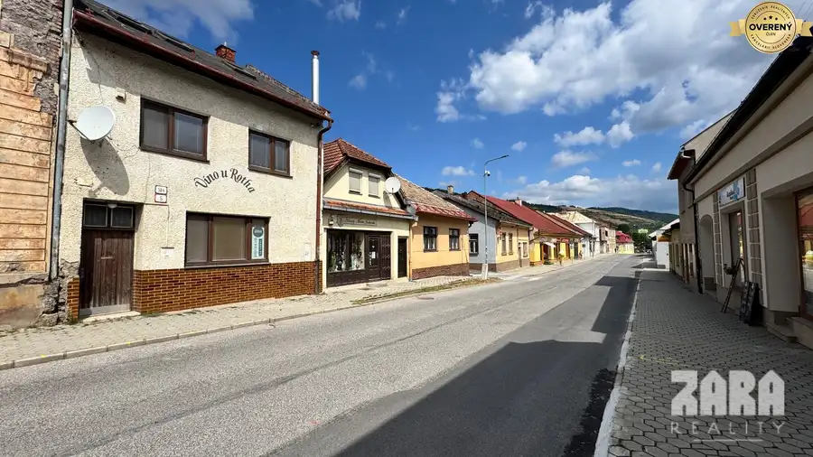
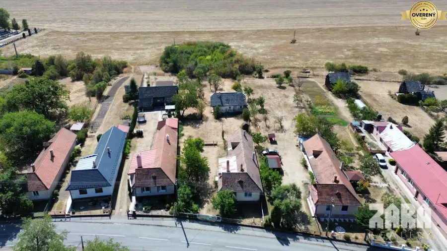

Aktuálna ponuka
9 nehnuteľností, predovšetkým pozemky, rodinné domy, záhrady. Každá má vlastnú stránku s fotkami, popisom a mapou.
Prezrieť ponuku
Rastislav LeškoRealitný maklér
Realitný maklér · ZARA REALITY s.r.o.
Predaj a prenájom nehnuteľností · Margecany, Baška, Nováčany

 Pozemok9
99 450 €MARGECANY: Slnečný pozemok 1530 m2 lokalita - Pod horou
Margecany
1530 m²
Slnečný pozemok s nádherným výhľadom v obci Margecany, ideálny pre výstavbu rodinného domu, v pokojnej časti obce s výbornou dostupnosťou a…
Pozemok7
40 440 €MARGECANY Stavebný pozemok 674 m² - lokalita Pod horou
Margecany
674 m²
Slnečný stavebný pozemok s nádherným výhľadom v obci Margecany. Ideálny pre výstavbu rodinného domu, v pokojnej časti obce s výbornou dostupnosťou a…
Záhrady10
35 000 €Baška - časť Maša, Veľká záhrada v chatovej lokalite, Košice okolie
Okolie, Baška
654 m²
Doslova pár metrov od mesta Košice, pri mestskej časti Myslava, nájdete miesto, ktoré ponúka nádherný únik do prírody, obklopený hustými lesmi a…
Pozemok9
99 450 €MARGECANY: Slnečný pozemok 1530 m2 lokalita - Pod horou
Margecany
1530 m²
Slnečný pozemok s nádherným výhľadom v obci Margecany, ideálny pre výstavbu rodinného domu, v pokojnej časti obce s výbornou dostupnosťou a…
Pozemok7
40 440 €MARGECANY Stavebný pozemok 674 m² - lokalita Pod horou
Margecany
674 m²
Slnečný stavebný pozemok s nádherným výhľadom v obci Margecany. Ideálny pre výstavbu rodinného domu, v pokojnej časti obce s výbornou dostupnosťou a…
Záhrady10
35 000 €Baška - časť Maša, Veľká záhrada v chatovej lokalite, Košice okolie
Okolie, Baška
654 m²
Doslova pár metrov od mesta Košice, pri mestskej časti Myslava, nájdete miesto, ktoré ponúka nádherný únik do prírody, obklopený hustými lesmi a…
 Pozemok6
78 600 €MARGECANY - Stavebný pozemok - Pod horou. Výmera 1191m². IS.
Margecany
1191 m²
EXKLUZÍVNE na predaj: Nepremeškajte príležitosť ku kúpe slnečného stavebného pozemku s nádherným výhľadom v obci Margecany. Ideálny pre výstavbu…
Pozemok6
78 600 €MARGECANY - Stavebný pozemok - Pod horou. Výmera 1191m². IS.
Margecany
1191 m²
EXKLUZÍVNE na predaj: Nepremeškajte príležitosť ku kúpe slnečného stavebného pozemku s nádherným výhľadom v obci Margecany. Ideálny pre výstavbu…
 Rodinné domy10
349 900 €NOVÁČANY: 4 izb. NOVOSTAVBA. Moderná architektúra. 956 m2.
Okolie, Nováčany
4-izbový103 m²
✅ ŠTÝLOVÁ, KVALITNÁ NOVOSTAVBA len pár minút od Košíc. Pozemok 956 m² | Úžitková plocha 103,12 m² | Zastavaná plocha domu 125 m2 + TERASA 18 m²…
Rodinné domy10
349 900 €NOVÁČANY: 4 izb. NOVOSTAVBA. Moderná architektúra. 956 m2.
Okolie, Nováčany
4-izbový103 m²
✅ ŠTÝLOVÁ, KVALITNÁ NOVOSTAVBA len pár minút od Košíc. Pozemok 956 m² | Úžitková plocha 103,12 m² | Zastavaná plocha domu 125 m2 + TERASA 18 m²…

Rodinné domy10 109 500 €GELNICA | 300 m² v centre mesta za 109 500 € | bývanie, podnikanie Gelnica 300 m² Hľadáte veľký dom pre rodinu? Priestor, v ktorom môžete spojiť bývanie s prácou? Alebo nehnuteľnosť, ktorú si môžete prispôsobiť na viac samostatných… Záhrady10
49 500 €VYŠNÁ HUTKA | Záhrada 381 m² • studňa • elektrina • parkovanie
Okolie, Vyšná Hutka
381 m²
Hľadáte vlastný kúsok zelene neďaleko Košíc, kam nemusíte nosiť vodu v bandaskách ani nechávať auto ďaleko od pozemku? Ponúkame na predaj **záhradu s…
Záhrady10
49 500 €VYŠNÁ HUTKA | Záhrada 381 m² • studňa • elektrina • parkovanie
Okolie, Vyšná Hutka
381 m²
Hľadáte vlastný kúsok zelene neďaleko Košíc, kam nemusíte nosiť vodu v bandaskách ani nechávať auto ďaleko od pozemku? Ponúkame na predaj **záhradu s…
 Chaty a chalupy10
169 900 €Celoročne obývateľná rekreačná chata - Šugov, Medzev. Všetky IS.
Okolie, Medzev
4-izbový100 m²
ZARA REALITY Rekreačná chata v objatí prírody Šugovská dolina, Medzev. Miesto, kde končí ruch a začína príroda. ZARA REALITY v zastúpení Ing.…
Chaty a chalupy10
169 900 €Celoročne obývateľná rekreačná chata - Šugov, Medzev. Všetky IS.
Okolie, Medzev
4-izbový100 m²
ZARA REALITY Rekreačná chata v objatí prírody Šugovská dolina, Medzev. Miesto, kde končí ruch a začína príroda. ZARA REALITY v zastúpení Ing.…

Rodinné domy10 135 000 €Obec BAČKOV - 5 izbový rodinný dom s veľkým rovinatým pozemkom Bačkov 5-izbový170 m² 2 000 m² POZEMOK - 5 IZIEB - MOŽNOSŤ DVOJGENERAČNÉHO BÝVANIA - KÚPOU VOĽNÝ ZARA REALITY v zastúpení Ing. Rastislav Leško ponúka na predaj priestranný…Tomuto výberu zatiaľ nezodpovedá žiadna ponuka. Napíšte mi, čo hľadáte.
Volám sa Ing. Rastislav Leško. Som realitný maklér kancelárie ZARA REALITY s.r.o. a pôsobím predovšetkým v lokalitách Margecany, Baška, Nováčany a Gelnica (Košický kraj).
9 nehnuteľností, predovšetkým pozemky, rodinné domy, záhrady. Každá má vlastnú stránku s fotkami, popisom a mapou.
Prezrieť ponukuMargecany, Baška, Nováčany, Gelnica, Vyšná Hutka a okolie. Ponuku si môžete prezrieť podľa lokality.
Nehnuteľnosti v lokaliteOdhad trhovej ceny, príprava prezentácie, obhliadky, zmluvy a odovzdanie nehnuteľnosti.
Dohodnúť stretnutie
Na čo sa pýtate najčastejšie, skôr než sa stretneme.
Odhad trhovej ceny vychádza z aktuálnych ponúk a predajov v lokalite, nie z cenníkových tabuliek. Podmienky Vám poviem pri prvom telefonáte.
Najprv obhliadka a odhad ceny, potom príprava prezentácie (fotografie, popis, inzercia), obhliadky so záujemcami, rezervačná zmluva, kúpna zmluva, návrh na vklad do katastra a odovzdanie nehnuteľnosti. O každom kroku viete vopred.
Najrýchlejšie cez WhatsApp alebo telefón. Termín stretnutia alebo obhliadky dohodneme podľa Vás.